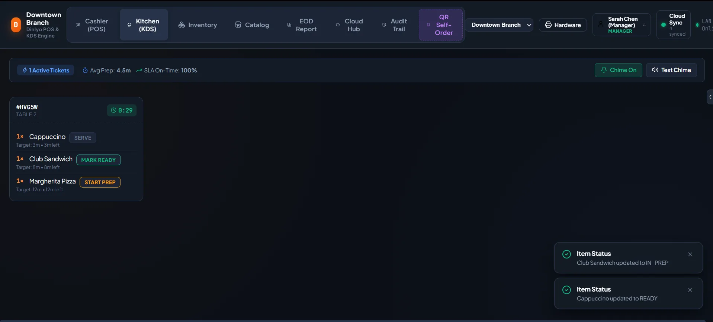
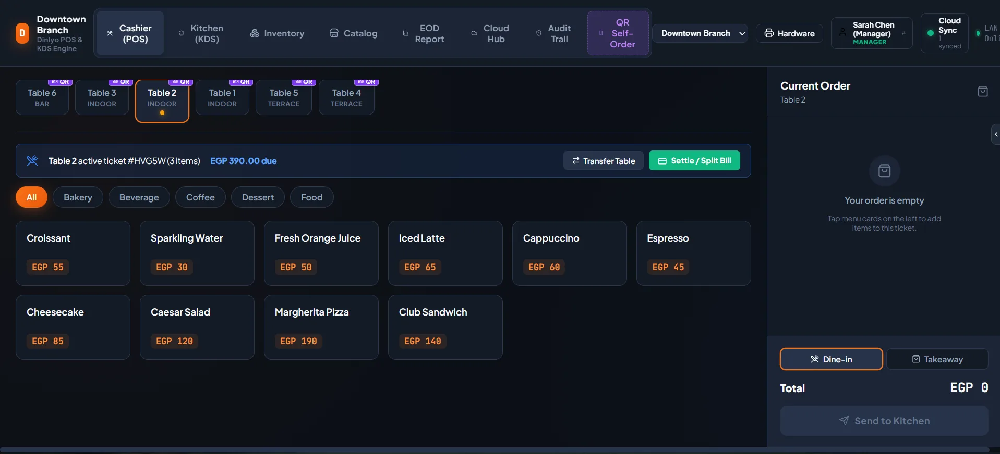
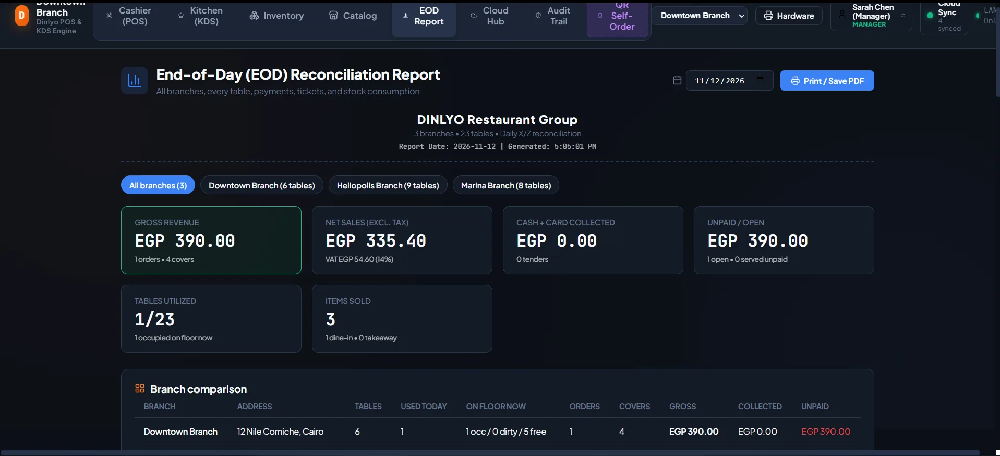
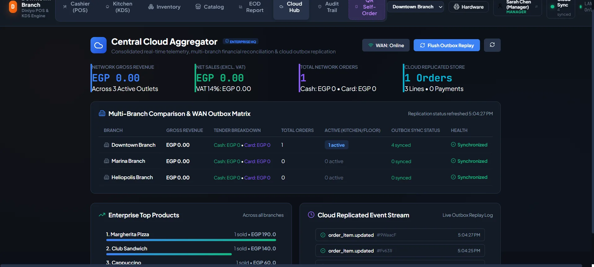
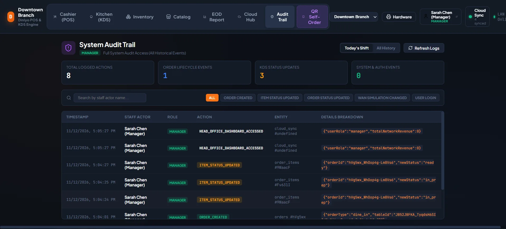

Tables and order lifecycle
Staff can manage tables and move an order through placed, in prep, ready, and served states. QR self-ordering feeds the same lifecycle instead of creating a separate queue.
Project case study · September 2026
A restaurant operations system designed around the moment an order leaves a table and reaches the kitchen. The build turns a formal product specification into a fast POS, kitchen display, QR self-ordering flow, and reliable stock trail.

The system connects the floor, kitchen, reporting, cloud administration, and audit workflows in one operational surface.





The core workflow keeps front-of-house, kitchen, and inventory operations aligned without making staff wait for a page refresh.
Staff can manage tables and move an order through placed, in prep, ready, and served states. QR self-ordering feeds the same lifecycle instead of creating a separate queue.
Orders reach the kitchen display in under a second over WebSockets, so the next ticket is visible while the team is still preparing the current one.
Automatic resync recovers the display after a connection drop. An offline outbox holds actions safely until the server is reachable again.
The system prints receipts, records an audit log, and deducts stock by recipe so an order is reflected in operations as well as sales.
The implementation scope is organized into four phases, from tenant-aware restaurant operations to resilient hardware and inventory workflows.
I can walk through the order lifecycle, reconnect behavior, or the inventory model.